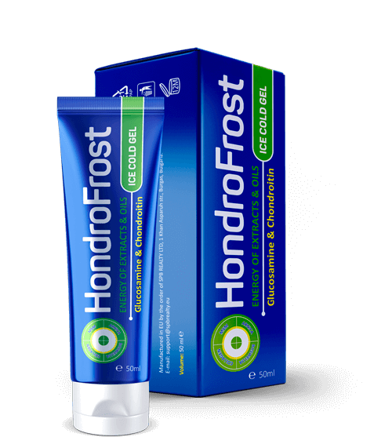

Το χάος στα φαρμακείαστην Αθηνά ή πως οι άπληστοι φαρμακοποιοί μας έκρυβαν το καλύτερο σε πωλήσεις φάρμακο της Ευρώπης για τη θεραπεία των αρθρώσεων!
Εδώ και 2 χρόνια στην ευρωπαϊκή αγορά υπάρχει ένα θαύμα-σκεύασμα για τη θεραπεία των
αρθρώσεων – . Με την αποτελεσματικότητα ξεπερνάει σε πολλές φορές τα ανάλογα του
– δίνει όχι μόνο γρήγορο αποτέλεσμα μετά την έναρξη εφαρμογής του, αλλά και αποκαθιστά τη φυσική
λειτουργία των αρθρώσεων, μαζί με αυτό δεν έχει παρενέργειες (καθόλου).
Ειδικά για
τη σύγκριση των δύο σκευασμάτων παρουσιάζουμε τον πίνακα
|  |
 Φαρμακευτικά προϊόντα |
|
|---|---|---|
| Δράση: | Η αντιμετώπιση των αιτίων του πόνου, η επανεκκίνηση των λειτουργιών των αρθρώσεων σε κυτταρικό επίπεδο | Η προσωρινή αναλγητική δράση |
| Πρόσθετα εφέ: |
º Η αποκατάσταση της ροής του αίματος σε ασθενείς αρθρώσεις º Η ενίσχυση των αιμοφόρων αγγείων º Σταματάει τον σύνδρομο πόνου |
δεν υπάρχουν |
| Οι παρενέργειες η ζημιά για τον οργανισμό |
δεν υπάρχουν | º Οι δερματικές εκδηλώσεις κατά την εφαρμογή º Φλυκταινώδης εξανθήματα º Βρογχοσπαστικές αντιδράσεις º Ερύθημα, δερματίτιδα |
| Ο κανόνας της εργασίας είναι: | Βελτιώνει την κυκλοφορία του αίματος στην περιοχή εφαρμογής και διεγείρει τις νευρικές απολήξεις, ξεκινάει η διαδικασία αποκατάστασης των κυττάρων | Κάνει αναίσθητο τα καλύμματα, συχνά όχι διεισδύοντας στο επιθυμητό βάθος χωρίς επιπλέον υπερήχων επιρροών |
| Σύνθεση | Φυσικά φυτικά συστατικά και βιταμίνες | Η δικλοφενάκη και άλλα συστατικά, που παράχθηκαν με χημικούς τρόπους |
| Η θέση στην κατάταξη των πωλήσεων στην Ευρώπη για το 1ο τρίμηνο του 2017 : | 1(+53) | 2(-1) |
Είναι ένα προϊόν που επιτρέπει στο συντομότερο δυνατό χρονικό διάστημα, κυριολεκτικά από 4 ημέρες, να ξεχάσουμε τον πόνο στην πλάτη και τις αρθρώσεις, και μέσα σε μερικούς μήνες να θεραπεύσει ακόμη και πολύ δύσκολες περιπτώσεις.
Το προϊόν αποτελείται από φυσικά προϊόντα της μελισσοκομίας. Η γέλη εφαρμόζεται στην προβληματική περιοχή ή τμήμα του σώματος, και βοηθάει να απαλλαγούμε από τον πόνο στην πλάτη και τις αρθρώσεις. Οι διαδικασίες αποκατάστασης συμβαίνουν χωρίς εγχειρήσεις.
Ακόμη και σε μια εφαρμογή, μπορείτε να ενεργοποιήσετε περίπου 930 000 κύτταρα, που εξυπηρετούν με τον όφελος τη ροή του αίματος σας, έτσι και συμβαίνει η θεραπεία. Εδώ σημαντικό είναι η σταθερότητα.
Η έκανε στην Ευρώπη μια πραγματική επανάσταση αναμεσά στα προϊόντα για τη θεραπεία των αρθρώσεων. Ένα τέτοιο χρήσιμο και αποτελεσματικό φάρμακο δεν υπήρχε πριν ποτέ. Εμφανίστηκε το 2017, η δημιουργία του προηγήθηκε με πάνω από 6 χρόνια κλινικές δοκιμές. Σχεδόν αμέσως μετά την εμφάνιση του στην αγορά, ξεπέρασε όλα τα ανάλογα του με όλα τα στοιχεία και σήμερα είναι το μεγαλύτερο σε πωλήσεις σκεύασμα για τη θεραπεία των αρθρώσεων.
Και τι συμβαίνει στην Ελλάδα;
Ακόμα δεν έχει παρουσιαστεί στα ελληνικά φαρμακεία (και κατά την πιθανότατα δεν θα είναι). Και παρά το γεγονός ότι έχει καταφέρει να περάσει όλες τις κλινικές δοκιμές στο εργαστήριο Εθνικού και Καποδιστριακού Πανεπιστήμιου Αθηνών και έχουν λάβει όλα τα απαραίτητα πιστοποιητικά. Γιατί είναι έτσι τα πράγματα με αυτό το μοναδικό προϊόν;
Πήραμε την συνέντευξη από έναν από τους ιδιοκτήτες του μεγάλου φαρμακευτικού δικτύου Αθηνά – του Πέτρου Σηφάκη και να δούμε τι απάντησε. Είναι θαυμάσιο και δεν χωράει στο μυαλό μου!
- Κύριε Σηφάκη, πως θα σχολιάσετε ό,τι το γνωστό στην Ευρώπη προϊόν μέχρι στιγμής δεν παρουσιάστηκε στα ελληνικά φαρμακεία; Γνωριστήκατε με αυτό;
Ναι, το γνωρίζω. – είναι ένα καλό σκεύασμα. Αυτό πραγματικά βοηθάει να επιστρέψει στις αρθρώσεις την φυσιολογική κατάσταση τους και σε πιο σύντομο χρονικό διάστημα, το πουλούσαμε περίπου ένα μήνα, μετά αποσύρθηκε από την πώληση. Απλά έχει γίνει ασύμφορο για να το κάνεις αυτό, το ίδιο, νομίζω, συνέβη και σε άλλα φαρμακεία.
Πρέπει να καταλάβουμε ότι τα φαρμακεία - είναι, κυρίως οι εμπορικές οργανώσεις, που, όπως και οποιαδήποτε καταστήματα, στοχεύουν στο να πάρουν το μέγιστο κέρδος. Ναι, έχουμε μια λίστα με τα φάρμακα που πρέπει να πωληθούν οπωσδήποτε (αυτή η λίστα δημιουργεί το κράτος), αλλά ΧΧ σε αυτή τη λίστα δεν περιλαμβάνεται.
- Το δεν πουλιότανε καλά;
- Το αντίθετο πήγαινε πάρα πολύ καλά, ακόμη και με την υψηλή προσαύξηση. Καταλαβαίνετε, τα προϊόντα για τις αρθρώσεις, με βάση τον αριθμό των ασθενών μέχρι σήμερα, δίνουν μεγάλο κέρδος. Το ίδιο αποκαθιστά τη φυσική λειτουργία των αρθρώσεων, που είχε ο άνθρωπος, πριν από την εμφάνιση της νόσου. Ως συνέπεια, οι άνθρωποι αναρρώνουν και δεν πηγαίνουν στο φαρμακείο για παρόμοια σκευάσματα, που μόνο θα αφαιρέσουν τον πόνο για λίγο και μετά πάλι θα πρέπει να αγοράσουν αυτά τα προϊόντα για την ανακούφιση του πόνου και έτσι πάει στο κύκλο. Χρησιμοποιώντας το ίδιο δεν έχουν αυτή την ανάγκη. Ως αποτέλεσμα, τα φαρμακεία φέρνουν ζημιές και είναι σημαντικές.
Γιατί να πωλούν αυτό το οποίο είναι ασύμφορο; Να σκεφτείτε λίγο μονοί σας. Ναι,
μάλλον δεν είναι από την ηθική άποψη, αλλά αυτό είναι μόνο μια επιχείρηση.
Και είναι, πραγματικά!
Γιατί να μην πωλούν ό, τι βοηθά μόνο προσωρινά; Έτσι και οι άνθρωποι θα επιστρέψουν… Αυτό είναι απαίσιο. Και τι είναι το πιο αξιοσημείωτο, ότι η κατάσταση αυτή είναι χαρακτηριστική για όλες τις περιοχές της Ελλάδας. Στα ελληνικά φαρμακεία το απλά δεν θα βρείτε, όχι επειδή δεν βοηθάει καλά, αλλά αντίθετα, είναι πάρα πολύ καλό, όσο παράδοξο και αν ακούγεται! Και δεν μπορείς να κάνεις τίποτα – οι νόμοι είναι στην πλευρά των φαρμακοποιών.
Ζητήσαμε να δώσει τα σχόλια σχετικά με το προϊόν τον άξιο ρευματολόγο – τον Γεώργιο Δημάκη

Ο Δόκτορας ιατρικών επιστημών, ο καθηγητής Δημάκης Γ.
"...Σχετικά με το αποτέλεσμα του αναφερομένου προϊόντος - η απάντηση είναι πολύ απλή - ξαναχτίζοντας την παροχή αίματος της άρθρωσης, θα την θεραπεύουμε!
Πολλοί άνθρωποι λανθασμένα πιστεύουν ότι η αποκατάσταση της κυκλοφορίας του αίματος μετά τα 45 χρόνια είναι σχεδόν αδύνατο.
Για τους ανθρώπους άνω των 40, στους οποίους εμφανίστηκαν τις αρρώστιες "με τη ηλικία" αντιμετωπίζουν τα παρόμοια προβλήματα: η οστεοχόνδρωση , η σκολίωση, η κήλη, η ισχιαλγία, το τσιμπημένο νεύρο και άλλα. Αυτές οι ασθένειες μας κουράζουν πολύ και εμποδίζουν να ζήσουμε. Κλαίνε, τους πονάει, πολλοί δεν μπορούν να κινηθούν γρήγορα λόγω τους πολύ δυνατούς πόνους, κάποιος δεν μπορεί να περπατάει καλά. Και, φαίνεται, ότι είναι οι απλοί άνθρωποι - δεν είναι αθλητές και δεν είναι άτομα με ειδικές ανάγκες. Και διαμαρτύρονται - "γιατί αυτό σε μένα, γιατί εγώ; ".
ΑΛΛΑ! Ας μην γκρινιάζουμε, και να αποκαταστήσουμε την κυκλοφορία του αίματος.
Μέχρι πρόσφατα ο αποτελεσματικός τρόπος για τη θεραπεία ήταν το σύμπλεγμα από τις ασκήσεις στο γυμναστήριο στα όργανα, αλλά είναι πολύ βαρύ και μακρύ μέθοδος. Στους ανθρώπους πονάει, είναι δύσκολο, δεν έχουν δυνάμεις και χρόνο για να επισκεφθούν την αίθουσα του γυμναστήριου, είναι εύκολο να παρατήσουν όλα αυτά.
Για αυτούς τους ανθρώπους είναι ιδανικό και πιο εύκολος τρόπος για να χρησιμοποιήσουν το "".
Με την υποστήριξη του Ιατρικό Ίδρυμα διεξήχθη η έρευνα, η οποία ξεπέρασε τις προσδοκίες μας
Η έρευνα του Ιατρικό Ίδρυμα: πώς απαλλαχθήκατε από τα προβλήματα με τις αρθρώσεις;
23%
47%
8%
17%
5%
Έχουμε καιρό να χρησιμοποιούμε στην πράξη και να έχουμε πάρει τις αξιόπιστες αποδείξεις για την αποτελεσματικότητα αυτού του προϊόντος. Οι κλινικές δοκιμές έχουν αποδείξει την ασφάλεια αυτού του φυσικού προϊόντος, ως εκ τούτου, συνιστώ ανεπιφύλακτα να χρησιμοποιήσετε , και όχι τα συνθετικά αναλγητικά και να μην ταΐσετε τους άπληστους για τα χρήματα των επιχειρηματιών...."
Δεδομένου ότι στα φαρμακεία δεν θέλουν να πωλούν τη λόγω του χαμηλού κέρδους, γι’ αυτό ο κατασκευαστής, για να προσελκύσει την προσοχή των απλών ανθρώπων με τις δικές του δυνάμεις, πήγε στα ακραία μέτρα – ως προσφορά προσωρινά έβαλε την προνομιακή τιμή για ένα τεμάχιο.
Η σε μειωμένη τιμή είναι διαθέσιμη σε όλους τους πολίτες της Ελληνικής Δημοκρατίας έως (συμπεριλαμβανόμενο). Ακριβώς πριν από αυτή την ημερομηνία θα πρέπει να κάνετε την παραγγελία στην ιστοσελίδα
Είναι αρκετά απλά να αφήσετε τα στοιχεία επικοινωνίας σας και λεπτομερώς θα σας συμβουλέψουν σχετικά με όλες τις ενδιαφέρουσες ερωτήσεις.
Είναι σημαντικό! Οι μελέτες έχουν αποδείξει ότι ο Ιούλιος – είναι ο καλύτερος μήνας για να ξεκινήσετε τη θεραπεία των αρθρώσεων. Χάρη στο γεγονός ότι γίνεται η κανονικοποίηση της μέσης θερμοκρασίας, το προϊόν απορροφάται κατά 45% πιο γρήγορα από ό, τι συμβαίνει σε άλλες εποχές. Στην ιστοσελίδα υπάρχει επίσης μια λεπτομερή περιγραφή του προϊόντος, τη σύνθεση του, γραφεί σε ποιες περιπτώσεις βοηθά καλύτερα και σε ποια συμπτώματα θα πρέπει να δώσετε προσοχή όσο το δυνατόν νωρίτερα.

Η δουλειά μου είναι σωματική. Συνεχώς μετά την αλλαγή της βάρδιας πονούσαν οι αρθρώσεις. Διάβαζα περισσότερα καλά σχόλια για το ΧΧ και την παρήγγειλα. Δεν περίμενα ιδιαίτερο αποτέλεσμα, αλλά την επόμενη ημέρα μετά την έναρξη της χρήσης κατάλαβα ότι έχει γίνει αισθητά πιο εύκολο! Έγινα πιο κινητικός, τις αρθρώσεις δεν "γκρινιάζουν". Το συνιστώ ανεπιφύλακτα!
Και το δέμα μου στην Αθηνά έφτασε πολύ γρήγορα.

Παρήγγειλα την στην γυναίκα μου πριν 2 μήνες. Υπέφερε από πόνους στην πλάτη. Λέει ότι ο πόνος έχει περάσει εντελώς. Μετά τη θεραπεία ποτέ δεν " πυροβόλησε ". Και χαίρομαι, ότι στο σπίτι άρχισε να ασχολείται με το σπίτι περισσότερα :)

Παρήγγειλα για μένα το θεραπευτικό πρόγραμμα, καθώς συνεχώς πονάνε τα γόνατά μου. Πολύ χαίρομαι που κατάφερα να μπω στην έκπτωση με 1 ευρώ!

Η γνωστή μου από την δουλειά έκανε θεραπεία με την . Πολύ καλά λόγια έλεγε για αυτήν. Ναι και εγώ, παρατήρησα ότι σταμάτησε να κουτσαίνει. Τώρα παρήγγειλα για μένα και τη γυναίκα μου, ενώ η έκπτωση συνεχίζεται. Ευχαριστώ!
.jpg)
Το ξέρω αυτό το θαύμα-προϊόν! Τα τελευταία 5 χρόνια έχω δοκιμάσει όλες τις αλοιφές, έμπλαστρα και χάπια - τίποτα δεν βοηθούσε. Καλά είναι η αδελφή μου, με σύστησε την . Με ένα χέρι έδιωξε όλα τα προβλήματα με την πλάτη και τις αρθρώσεις των ποδιών!
Είναι η καταπληκτική γέλη! Απλώνω στις αρθρώσεις μόνο εδώ και μια βδομάδα και ήδη νιώθω σημαντικές βελτιώσεις. Θα συνεχίσω, για να αποκατασταθούν πλήρως τις αρθρώσεις μου.

Επιβεβαιώνω πλήρως –είναι απλά σούπερ προϊόν. Τα
προβλήματα με τις αρθρώσεις κατά το τελευταίο έτος, άρχισαν να εμφανίζονται όλο και πιο συχνά. Μόλις
πρόσφατα έμαθα για την . Μετά την χρήση της, ήδη από την πρώτη εβδομάδα αισθάνθηκα ότι
μπορώ να ζήσω σαν φυσιολογικός άνθρωπος, για να είμαι ειλικρινής, δεν περίμενα ότι θα
μπορούσε κάτι να με βοηθήσει. Συνιστώ σε όλους! Αυτό το σκεύασμα θα σας εκπλήξει ευχάριστα.
Η κόρη μου παρήγγειλε για μένα. Ποτέ δεν πίστευα σε αυτά τα σύγχρονα σκευάσματα. Αλλά εδώ το παραδέχομαι – καλύτερα από την δεν μου βοήθησε τίποτα!
Ευχαριστώ. Πρόλαβα να παραγγείλω με τιμή της έκπτωσης ! Πραγματικά με 1 ευρώ και είναι η γρήγορη παράδοση στην Αθηνά με ταχυδρομείο, είναι βολικό. Θα συνεχίσω να δοκιμάζω!
Πονούσε η πλάτη μου σε όλη του τη ζωή μου. Είναι το κληρονομικό πρόβλημα. Έχω περάσει ήδη σε όλους τους χειροπράκτορες , φυσιοθεραπευτές και λαϊκές θεραπευτές. Τα τελευταία χρόνια και τα κορδόνια με το ζόρι έδεσα . Διάβασα για την ΧΧ πολύ καλά σχόλια, αλλά φοβόμουνα να παραγγείλω. Αλλά μάταια. Τώρα μετανιώνω που πριν δεν ξεκίνησα να χρησιμοποιώ. Η πλάτη μου σε τόσο καλή κατάσταση δεν ήταν από τα 17 μου χρόνια! Σας συμβουλεύω να την δοκιμάσετε.
Παρήγγειλα για μένα την . Ο χειριστής είπε ότι με έκπτωση απομείναν λίγα τεμάχια. Αν θέλετε να προλάβετε - βιαστείτε!
Οι γιατροί με κάνουν τη θεραπεία εδώ και 3 χρόνια. Ελπίζω η Θα με βοηθήσει. Παρήγγειλα και η κοπέλα στο τηλέφωνο ευγενικά με είπε όλα για αυτό το προϊόν . Περιμένω τώρα το δεματάκι μου.
Από την παιδική ηλικία υπέφερα από αρθρίτιδα, δυστυχώς, όλα τα φάρμακα και θεραπείες μπορέσαν μόνο προσωρινά να παρέχουν κάποια ανακούφιση. Εγώ ζήλευα πολύ στους συμμαθητές, οι οποίοι μπορούσαν στα μαθήματα φυσικής αγωγής να τρέξουν, να παίξουν βόλεϊ, να περάσουν μια διαδρομή με εμπόδια... Μου έγινε διαθέσιμο όλα αυτά μόνο σε ηλικία των 38 ετών, όταν απαλλάχθηκα από την ασθένεια μου με τη βοήθεια της . Σήμερα λαμβάνω την μεγάλη ευχαρίστηση από όχι μεγάλα τζόκινγκ και κάνω ένα δραστήριο τρόπο ζωής!
Έφυγα από την άρση βαρών σαν πλοίαρχος του αθλητισμού, καθώς δεν μου
επέτρεψε να προχωρήσω και άλλο. Όσοι ασχολήθηκαν, θα με καταλάβουν – μετά από πολλές αθλητικές
διοργανώσεις ήμουνα ήδη όλος ο "σπασμένος". Μετά από αυτό εργαζόμουν σε οικοδομές, σε γενικές
γραμμές - οι αρθρώσεις είχα σαν ήμουν 70 ετών. Ο γιατρός με συμβούλεψε να περάσω το πρόγραμμα
θεραπείας με την , διάβασα – φαίνεται τα σχόλια ήταν καλά, αγόρασα και έκανα την
θεραπεία. Και πραγματικά, οι αρθρώσεις σταδιακά επέστρεψαν στο φυσιολογικό επίπεδο! Έκανα ξανά μια
επανεμφάνιση - σχεδόν όλος ο ιστός αποκαταστάθηκε πλήρως. Στο μεγάλο σπορ δεν θα γυρίσω φυσικά, αλλά
στο γυμναστήριο πηγαίνω με ευχαρίστηση και νιώθω .
Παιδιά, παραγγείλτε - δεν θα μετανιώσετε!

Παρήγγειλα για μένα αυτή την γέλη (κρίμα που τότε δεν είχε την έκπτωση). Ήρθε στην πόλη στην Αθηνά πολύ γρήγορα. Το αποτέλεσμα εξέπληξε. Όλες τις αρρώστιες που συνδέονται με αρθρώσεις περάσαν. Πριν μέχρι αυτή τη στιγμή μερικά χρόνια πονούσαν τα γόνατα και την πλάτη μου.